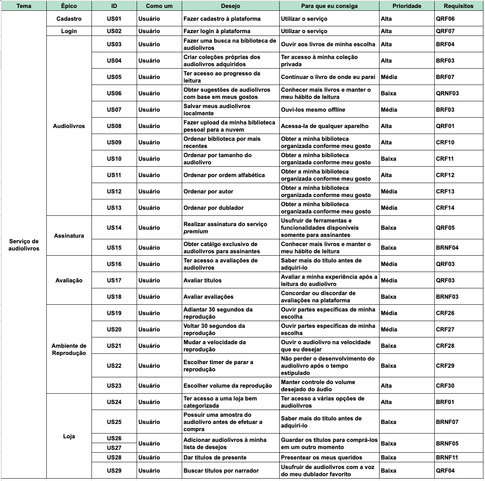

Backlog do Produto
Versionamento
| Versão | Data | Modificação | Autor |
|---|---|---|---|
| 1.0 | 21/10/2019 | Adição do Backlog | André Goretti, Marco Antonio e João Gabriel |
| 2.0 | 17/11/2019 | Adição das US09 a US13 | João Gabriel |
| 3.0 | 22/11/2019 | Adição das US19 a US23 | João Gabriel |
Introdução
Em termos gerais, o Product BackLog é uma listagem de todos os afazeres pendentes no projeto. Ele substitui o modelo tradicional de especificação de artefatos. Cada elemento da listagem é elicitado por meio de interação da equipe de desenvolvimento com o Cliente - podendo ser apenas um representante, o que torna os elementos levantados muito arbitrários; ou podendo ser uma equipe representante do Cliente, representando as diversas áreas que utilizarão o produto.
Backlog

EP01: Cadastro
US01: Fazer cadastro à plataforma
Eu, como um usuário, desejo fazer cadastro à plataforma para que eu consiga utilizar o serviço.
Critérios de aceitação
- Deve conter o botão de criar conta amazon para entrar na pagina
- Deve apresentar áreas para preenchimentos dos dados do novo usuário
- Deve realizar conexão com a amazon
- Deve concluir o cadastro salvando os dados do usuário
EP02: Login
US02: Fazer login à plataforma
Eu, como um usuário, desejo fazer login à plataforma para que eu consiga utilizar o serviço.
Critérios de aceitação
- Deve conter o botão de "sing in" para entrar na pagina
- Deve apresentar áreas para preenchimentos dos dados do usuário
- Deve realizar conexão com a amazon
- Deve efetuar o login
EP03: Audiolivros
US03: Fazer uma busca na biblioteca de audiolivros
Eu, como um usuário, desejo fazer uma busca na biblioteca de audiolivros para que eu consiga ouvir aos livros de minha escolha.
Critérios de aceitação
- Deve possuir uma aba de pesquisa
- Deve se mostrar resultados próximos
- Deve ter uma pagina de pesquisa avançada com maiores detalhes de livros
- Deve direcionar para a pagina do livro escolhido
US04: Criar coleções próprias dos audiolivros adquiridos
Eu, como um usuário, desejo criar coleções próprias dos audiolivros adquiridos para que eu consiga ter acesso à minha coleção privada.
Critérios de aceitação
- Deve ter uma área exclusiva de livros salvos
- Deve ter um botão de salvar a biblioteca escolhida
- Deve se apresentar os livros salvos quando disponível
- Deve salvar a lista de livros
US05: Ter acesso ao progresso da leitura
Eu, como um usuário, desejo ter acesso ao progresso da leitura para que eu consiga continuar o livro de onde eu parei.
Critérios de aceitação
- Deve poder acessar o livro
- Deve salvar no ponto onde o leitor parou
- Deve retornar no mesmo ponto onde o leitor parou
- Deve salvar no inicio quando acabar o livro
US06: Obter sugestões de audiolivros com base em meus gostos
Eu, como um usuário, desejo obter sugestões de audiolivros com base em meus gostos para que eu consiga conhecer mais livros e manter o meu hábito de leitura.
Critérios de aceitação
- Deve existir uma página de recomendações
- Deve ter salvo os livros lidos por aquele usuário
- Deve ter uma categorização de livros
- Deve mostrar livros associados com os já lidos
US07: Salvar meus audiolivros localmente
Eu, como um usuário, desejo salvar meus audiolivros localmente para que eu consiga ouvi-los mesmo offline.
Critérios de aceitação
- Deve poder salvar arquivos no sistema
- Deve ter um botão com a opção de salvar
- Deve conseguir baixar o livro por completo
- Deve ter permissão para o livro baixado
US08: Fazer upload da minha biblioteca pessoal para a nuvem
Eu, como um usuário, desejo fazer upload da minha biblioteca pessoal para a nuvem para que eu consiga acessa-la de qualquer aparelho.
Critérios de aceitação
- Deve ter a opção de salvar livro na sua biblioteca
- Deve ter acesso do aplicativo com a internet
- Deve salvar a biblioteca na nuvem
- Deve ter pagina de livros salvos para a nuvem
US09: Ordenar biblioteca por mais recentes
Eu, como um usuário, desejo ordenar a biblioteca por mais recentes para que eu consiga obter a minha biblioteca organizada conforme meu gosto.
Critérios de aceitação
- Deve ter a opção de ordenar a biblioteca
- Deve ter acesso do aplicativo com a internet
- Deve ordenar a biblioteca conforme o filtro
US10: Ordenar biblioteca por tamanho do audiolivro
Eu, como um usuário, desejo ordenar a biblioteca por tamanho do audiolivro para que eu consiga obter a minha biblioteca organizada conforme meu gosto.
Critérios de aceitação
- Deve ter a opção de ordenar a biblioteca
- Deve ter acesso do aplicativo com a internet
- Deve ordenar a biblioteca conforme o filtro
US11: Ordenar biblioteca por ordem alfabética
Eu, como um usuário, desejo ordenar a biblioteca por ordem alfabética para que eu consiga obter a minha biblioteca organizada conforme meu gosto.
Critérios de aceitação
- Deve ter a opção de ordenar a biblioteca
- Deve ter acesso do aplicativo com a internet
- Deve ordenar a biblioteca conforme o filtro
US12: Ordenar biblioteca por autor
Eu, como um usuário, desejo fazer ordenar a biblioteca por autor para que eu consiga obter a minha biblioteca organizada conforme meu gosto.
Critérios de aceitação
- Deve ter a opção de ordenar a biblioteca
- Deve ter acesso do aplicativo com a internet
- Deve ordenar a biblioteca conforme o filtro
US13: Ordenar biblioteca por dublador
Eu, como um usuário, desejo fazer ordenar a biblioteca por dublador para que eu consiga obter a minha biblioteca organizada conforme meu gosto.
Critérios de aceitação
- Deve ter a opção de ordenar a biblioteca
- Deve ter acesso do aplicativo com a internet
- Deve ordenar a biblioteca conforme o filtro
EP04: Assinatura
US14: Realizar assinatura do serviço premium
Eu, como um usuário, desejo realizar assinatura do serviço premium para que eu consiga usufruir de ferramentas e funcionalidades disponíveis somente para assinantes.
Critérios de aceitação
- Deve ter acesso ao serviço da amazon de login
- Deve conter um serviço de pagamento seguro
- Deve diferenciar tipos de usuarios
US15: Obter catálogo exclusivo de audiolivros para assinantes
Eu, como um usuário, desejo obter catálogo exclusivo de audiolivros para assinantes para que eu consiga conhecer mais livros e manter o meu hábito de leitura.
Critérios de aceitação
- Deve ter quais livros lindo pelo usuários
- Deve ter categorização de livros
- Deve ter serviços separados de premium e free
- Deve ter uma página de livros recomendados com sugestões
- Deve existir uma pagina de catálogo
EP05: Avaliação
US016: Ter acesso a avaliações de audiolivros
Eu, como um usuário, desejo ter acesso a avaliações de audiolivros para que eu consiga saber mais do título antes de adquiri-lo.
Critérios de aceitação
- Deve existir avaliação individual de cada livro
- Deve permitir que o usuário avalie livros
- Deve salvar e gerar media de avaliações
- Deve mostrar a avaliação nas informações do livro
US017: Avaliar títulos
Eu, como um usuário, desejo avaliar títulos para que eu consiga avaliar a minha experiência após a leitura do audiolivro.
Critérios de aceitação
- Deve existir avaliação individual de cada livro
- Deve permitir que o usuário avalie livros após leitura
- Deve salvar todas as avaliações
- Deve saber se o usuario leu o livro
US018: Avaliar avaliações
Eu, como um usuário, desejo avaliar avaliações para que eu consiga concordar ou discordar de avaliações na plataforma.
Critérios de aceitação
- Deve conter avaliações de uma avaliação como caracteristica
- Deve avaliar se a avaliação é coerente com o livro
- Deve existir uma pagina sobre a avaliação da avaliação do livro
EP06: Ambiente de Reprodução
US019: Adiantar 30 segundos da reprodução
Eu, como um usuário, desejo adiantar 30 segundos da reprodução, para que eu consiga ouvir partes específicas de minha escolha.
Critérios de aceitação
- Deve existir um ambiente de reprodução
- Deve haver opções de reprodução
US020: Voltar 30 segundos da reprodução
Eu, como um usuário, desejo voltar 30 segundos da reprodução, para que eu consiga ouvir partes específicas de minha escolha.
Critérios de aceitação
- Deve existir um ambiente de reprodução
- Deve haver opções de reprodução
US021: Mudar a velocidade da reprodução
Eu, como um usuário, desejo mudar a velocidade da reprodução, para que eu consiga ouvir o audiolivro na velocidade que eu desejar.
Critérios de aceitação
- Deve existir um ambiente de reprodução
- Deve haver opções de reprodução
US022: Escolher o timer de parar a reprodução
Eu, como um usuário, desejo escolher o timer de parar a reprodução, para que eu consiga não perder o desenvolvimento do audiolivro após o tempo estipulado.
Critérios de aceitação
- Deve existir um ambiente de reprodução
- Deve haver opções de reprodução
US023: Escolher o volume da reprodução
Eu, como um usuário, desejo escolher o volume da reprodução, para que eu consiga manter o controle do volume desejado do áudio.
Critérios de aceitação
- Deve existir um ambiente de reprodução
- Deve haver opções de reprodução
- Deve ter acesso aos controles do aparelho
EP07: Loja
US024: Ter acesso a uma loja bem categorizada
Eu, como um usuário, desejo ter acesso a uma loja bem categorizada para que eu consiga ter acesso a várias opções de audiolivros.
Critérios de aceitação
- Deve ter uma categorização bem definida de livros
- Deve existir uma página pratica com todos os livros
- Deve se permitir buscas de livros
US025: Possuir uma amostra do audiolivro antes de efetuar a compra
Eu, como um usuário, desejo possuir uma amostra do audiolivro antes de efetuar a compra para que eu consiga saber mais do título antes de adquiri-lo.
Critérios de aceitação
- Deve existir um trecho separado do livro como amostra
- Deve permitir para todos tipos de usuários
- Deve existir um botão para ouvir o exemplar
US026: Adicionar audiolivros à minha lista de desejos
Eu, como um usuário, desejo adicionar audiolivros à minha lista de desejos para que eu consiga guardar os títulos para comprá-los em um outro momento.
Critérios de aceitação
- Deve existir um botão de adicionar a lista
- Deve existir uma lista de desejo para cada usuário
- Deve conter uma aba com sua lista de desejos
- Deve conseguir remover itens dessa lista
US028: Dar títulos de presente
Eu, como um usuário, desejo dar títulos de presente para que eu consiga presentear os meus queridos.
Critérios de aceitação
- Deve existir um botao com enviar como presente
- Deve ser possivel pesquisar por nome de usuários para mandar o presente
- Deve ter como resgatar o presente
- Deve ter como enviar uma mensagem junto ao presente
- Deve ter como recusar o presente e mandar de volta para o dono
US029: Buscar títulos por narrador
Eu, como um usuário, desejo buscar títulos por narrador para que eu consiga usufruir de audiolivros com a voz do meu dublador favorito.
Critérios de aceitação
- Deve existir uma aba de pesquisa para narrador
- Deve conter em cada livro o narrador do mesmo
- Deve se possivel ver o narrador de cada livro.